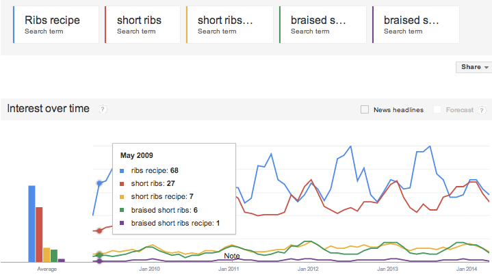

Market Research on Experimenters of Recipes
Goal:
Looking for users who would want to experiment with recipes
- ID dishes that encourage experimentation
- Must be complex enough to require recipes
- Good Example: Braised short-ribs
- Bad Example: Pizza, most people don’t follow recipes.
- Must require some level of precision
- Good Example: Any baking good
- Bad Example: Stir Fry.
- ID dishes that have variations
- Good: Ramen, there are so multiple types
- Bad:
- There needs to be an active enough “market” to sustain UGC
- Dish has high search volume
- Dish has passionate followers
Potential Survey Question:
Home cook?
What types of dishes do you like trying with new recipes for?
What types of recipes do you like experimenting with?
- Chicken wings
- Fried chicken
- Chicken breast
- Braised short ribs
- BBQ Ribs
Facebook Pulse:
Vince:
To all the cooks out there, how many of you guys experiment with recipes? Is there a good place to source and play with recipes?
TED:
Quick question to anyone who cooks a lot at home or likes to play around with recipes. What your go-to sites/resources to find recipes and what tools do you use when experimenting with recipes? Any input would be greatly appreciated...
Lee Springer Read Ratio by Michael Ruhlman, it gives you flexible base recipes that you can extend.
Joy Tenhagen Epicurious always has delicious stuff
Matt Camuto Teddy... I always try to go to the sites where they have a lot of pictures step by step. I love the way the stuff looks at the end but never can reproduce it Plus I never go where the star rating is less the 4.5. I am high brow like that. Epicurious is great for variety.
Courtney Schroeder Simplyrecipes.com has lots of easy tasty dishes
Lissa Critz Alton Brown's show, Good Eats, taught me lots about the science behind ingredients which is the basis for understanding how you can play around with substitutions and change recipes you find. He might have a book you can dig into.
Patrick Irvine I use this one. Its a delivery service which tells you how to prepare these preset menus and will deliver it to you. I only use the recipe part of it though. www.blueapron.com
Ron Tenhagen I just check your Instagram then try to copy it.
Jeff Ferris I have never had a recipe turn out badly from smittenkitchen.com
Keyword: Recipe
Understanding what users search for recipes. Looking back over the past 5 years, search traffic for “recipes” tend to be highest during winter months. [1]
Perhaps more interesting than the seasonality of the word, is that regions in the US that tend to include recipe in their search term.
While Washington and the North-Mid-West has always consistently searched recipe, it’s interesting to see growth in California.
Dialing into metro, regions, we find great representation in the Pacific/Northwest:
Comparing Recipe vs. Recipes
Nuanced differences between recipe and recipes.
- Chicken reigns supreme
- Chili recipe is a top search trend.
- Cooks search for a specific “recipe” while searching for genres of “recipes”
- Cooks will search for “crock pot” or “dinner” or “healthy” recipes.
Different Dish Genres
Comparing chili, pasta, ribs, chicken wings:
http://www.google.com/trends/explore#q=chili%20recipe%2C%20pasta%20recipe%2C%20ribs%20recipe%2C%20chicken%20wings%20recipe&geo=US&date=4%2F2009%2061m&cmpt=q
Chicken
http://www.google.com/trends/explore#q=chicken%20wings%20recipe%2C%20buffalo%20wings%20recipe%2C%20roasted%20chicken%20recipe&geo=US&cmpt=q

Pasta: http://www.google.com/trends/explore#q=pasta%20recipe%2C%20spaghetti%20recipe%2C%20cabonara%20recipe&geo=US&date=4%2F2009%2061m&cmpt=q
Short Ribs
http://www.google.com/trends/explore#q=Ribs%20recipe%2C%20short%20ribs%2C%20short%20ribs%20recipe%2C%20braised%20short%20ribs%2C%20braised%20short%20ribs%20recipe&geo=US&date=4%2F2009%2061m&cmpt=q

[1] http://www.google.com/trends/explore#q=recipes&geo=US&date=4%2F2009%2061m&cmpt=q